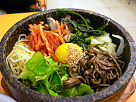
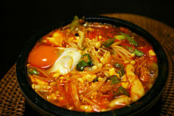
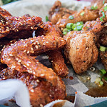
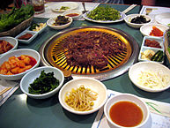
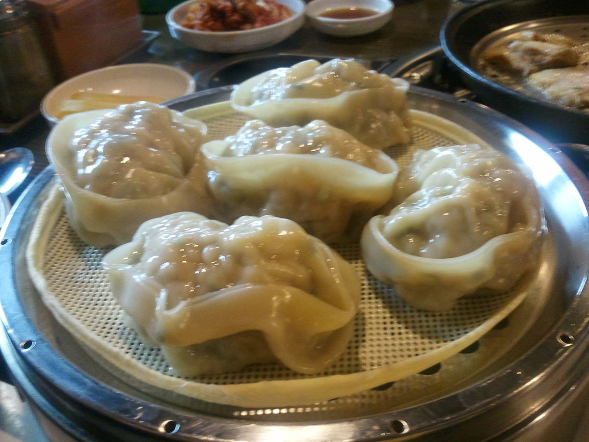
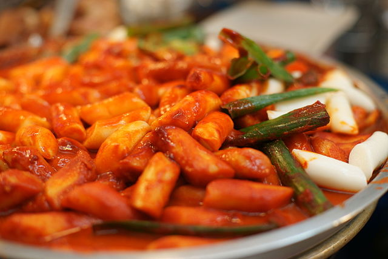

Bim Bim Bap
is mix rice with seasoned vegtables with meat. The different flavors mixed together tastes incredible.
is mix rice with seasoned vegtables with meat. The different flavors mixed together tastes incredible.

Soondubu Jiggae.
It is a soft tofu dish.
It is a soft tofu dish.

Korean Fried Chicken
This is not be a traditional dish. You can get some at one of my favorite restuarants called "Crisp"
This is not be a traditional dish. You can get some at one of my favorite restuarants called "Crisp"

Bulgogi
You can probably find this delicious meat during korean barbeque. It is sort of like gyu kaku but with lettuce wraps.
You can probably find this delicious meat during korean barbeque. It is sort of like gyu kaku but with lettuce wraps.

Mandu
Korean style dumplings.
Korean style dumplings.

Tteokbokki
Sweet and spicy sticky rice noodles.
Sweet and spicy sticky rice noodles.